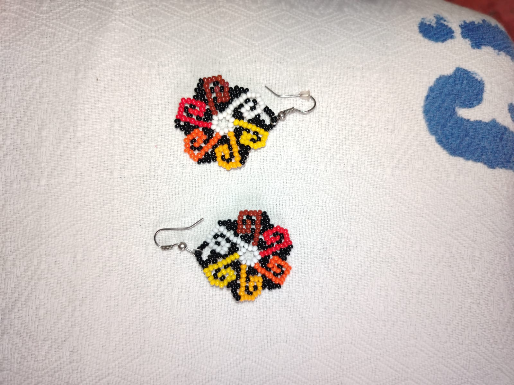

En Artesanías Cochuelo creemos en el valor de lo hecho a mano. Cada accesorio refleja tradición, creatividad y dedicación.

Artesanías Cochuelo nació con el propósito de rescatar técnicas artesanales tradicionales utilizando materiales como hilo nailon y pepitas de colores.
Cada pieza es elaborada cuidadosamente a mano, lo que hace que cada accesorio sea único y especial.
Nuestro objetivo es compartir la belleza del trabajo artesanal con personas que valoran el arte, la creatividad y la cultura.
Cada producto está hecho a mano con dedicación y detalle.
Diseños únicos inspirados en colores y cultura.
Materiales seleccionados para ofrecer piezas duraderas.